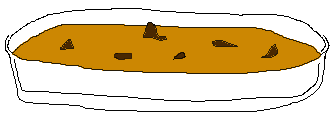
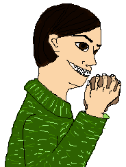

Pumpkin Chiffon Pie
I am sure that if someone was making this pie that could actually
cook it would have turned out wonderful. The recipe isn't difficult.
But you have to remember who the chef is here. I mean I have to read
the instructions on campbell's soup cans. I can't even make jello
for goodness sake, I am sure some were witness to that culinary disaster.
And all you have to do there is add boiling water. Well despite my
handycap I did try to make it and that is the important part.
To start off the pumpkin filling was a little on the runny side. It had
the consistency and texture of (according to Kevin) cat carcass (don't ask
ME how he knows this!)
Anyway... The crust wouldn't even stay together and broke up as soon
as we put anything on top. As a matter a fact is was more like pumpkin
soup. No... more like a pumpkin sea with little gingersnap icebergs. Now
isn't that better.

actual pie
I do have to say though that it didn't taste too bad and if intentionally
served as a soup style desert would be quite a novelty. Maybe I will serve
it that way at Christmas. hum...
Thanksgiving Dinner

Well there isn't much to report from our Thanksgiving dinner.
We couldn't seem to find a turkey so we substituted a small
bird we found on the road. Not much meat but tasty none the
less. Since we couldn't find any cranberries either we opted
for the curry solution. All in all it wasn't a bad meal, a
little of this a little of that. Sort of a cross cultural type
dinner really. Unfortunatly we only managed to get this one
photo of me being a ham as usual. Please keep in mind that
although our apartment came furnished they seemed to have
forgotten the cutlery.